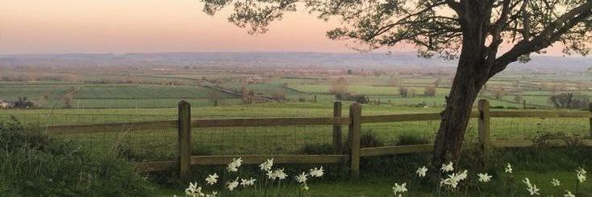

Istoric
Acasă
|
Planner
|
Istoric
|
Despre
|
Contact

Activități salvate / finalizate
Aici va apărea istoricul activităților (în Lab 3/4/5).
Exemplu: „Laborator rețele” — 10:00 — Medie
Exemplu: „Tema fizică” — 18:00 — Mare